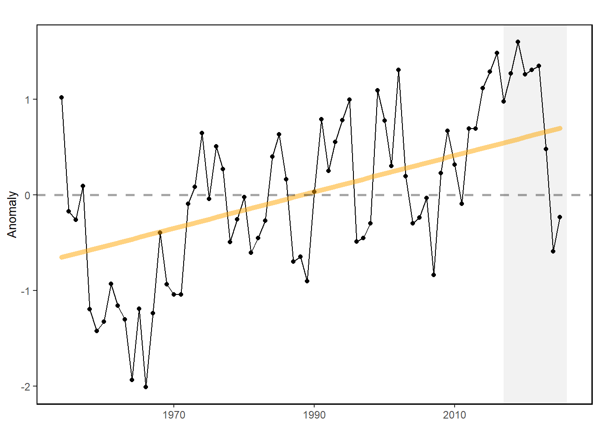
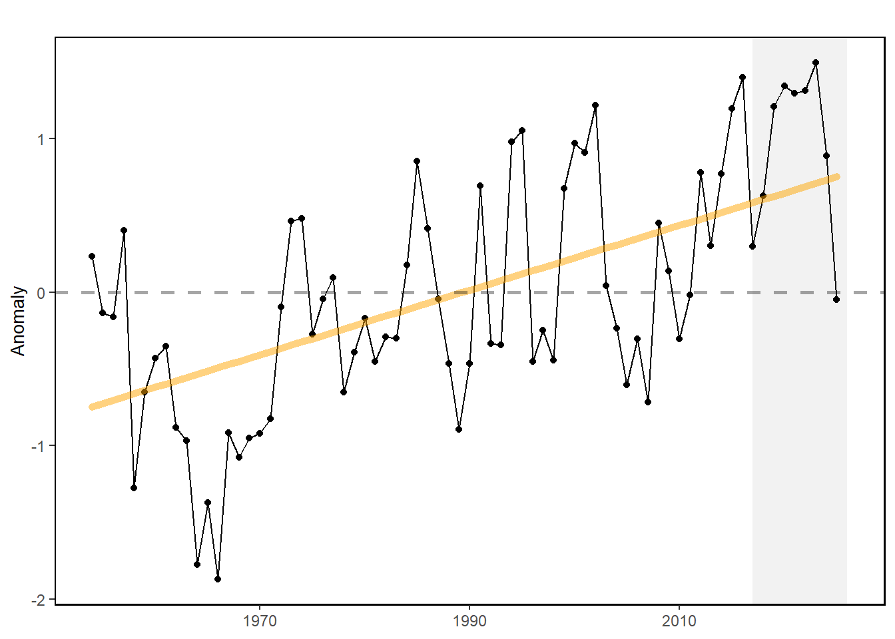

51 Gulf Stream Index
Last updated July 23, 2026
Description: The monthly Gulf Stream North Wall Index presented here are based on the gridded EN.4.2.2 analyses dataset from Jan. 1954 to Nov. 2024 (https://www.metoffice.gov.uk/hadobs/en4/), calculated following [74] and [75].
Contributor(s): Zhuomin Chen
Affiliations: Gulf of Maine Research Institute
Indicator Family:
Indicator Category:
Synthesis Theme:
51.1 Introduction to Indicator
The T200-based Gulf Stream Index is calculated as the standardized first principal component time series from the empirical orthogonal function (EOF) analysis of the 200 m temperature time series at the 20 base points (selected along the climatological (1954-2018) 15°C isotherm at 200 m between 74° and 55°W; 1° longitudinal resolution) and it represents the meridional fluctuation of the Gulf Stream North Wall [74,76,77]. The T200-based Western Gulf Stream Index is calculated using the same method, except only selecting the western 10 base points (instead of all 20 base points between 74° and 55°W). It suggests the meridional shift of the western part of the Gulf Stream North Wall.
51.2 Key Results and Visualizations
The Gulf Stream Index suggests that recent years (2021-2022) the GS almost maintains its relative northward shift relative to the long-term mean. Since Aug. 2023, the Gulf Stream is suggested to move southward, which is mainly due to its eastern part (east of 65°W). The Western Gulf Stream Index maintains its relative northward position during the past months since Aug. 2023.
Mid-Atlantic, gsi

New England, gsi
#> NULLMid-Atlantic, westgsi

New England, westgsi
#> NULL51.3 Implications
The Gulf Stream North Wall Index indicates the meridional shift of the Gulf Stream position on monthly timescale, which may affect the slope water properties intruding onto the continental shelf. The GSNW index is also suggested to be an good indicator for biomass distribution of multiple marine fishes (e.g., silver hake [78]). As the Gulf Stream has become less stable and shifted northward in the last decade, warmer ocean temperatures have been observed on the northeast shelf [79], and a higher proportion of Warm Slope Water has been present in the Gulf of Maine Northeast Channel [80], and sea surface height along the U.S. east coast has increased. Since 2008, the Gulf Stream has moved closer to the Grand Banks, reducing the supply of cold, fresh, and oxygen-rich Labrador Current waters to the Northwest Atlantic Shelf [81].
51.4 Indicator statistics
Spatial scale: Gulf Stream between 74°W and 55°W
Temporal scale: Monthly from 1954 to 2024
Variable definitions
51.5 Get the data
Point of contact: Zhuomin Chen (zchen@gmri.org)
ecodata dataset: ecodata::gsi
Tech Doc link: https://noaa-edab.github.io/tech-doc/gsi.html